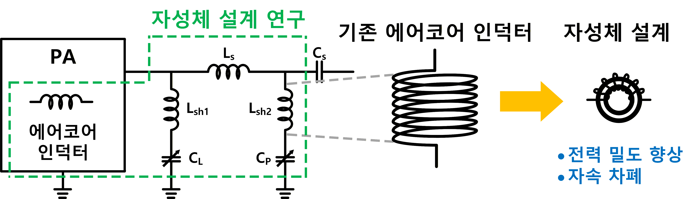

Power amplifiers
High-frequency power conversion with attention to switching behavior and component losses.
KAIST INTEGRATED POWER CIRCUIT LAB
APPLICATIONS
Efficient RF power generation and impedance matching
RF power systems deliver high-frequency electrical energy to a load through a power amplifier and an impedance-matching network. Their design must balance conversion efficiency, matching range, component stress and physical size.
Explore projects
RESEARCH OVERVIEW
High-frequency power conversion with attention to switching behavior and component losses.
Variable-reactance circuits that adapt the electrical interface between the amplifier and the load.
Inductor design and magnetic-material evaluation for compact RF power hardware.
RESEARCH IN PROGRESS
Project snapshot · June 2026
PROJECT 01
Research partner

This project investigates a 2 kW-class system that integrates the power amplifier (PA) and matching network. It targets improved efficiency and power density through variable-reactance circuits and optimized inductors.
Study electronic capacitance and inductance adjustment, including voltage stress and response characteristics.
Evaluate magnetic materials and core structures for PA and matcher inductors using simulation and experiments.
Analyze losses, saturation, temperature and circuit interactions when reducing component size.
